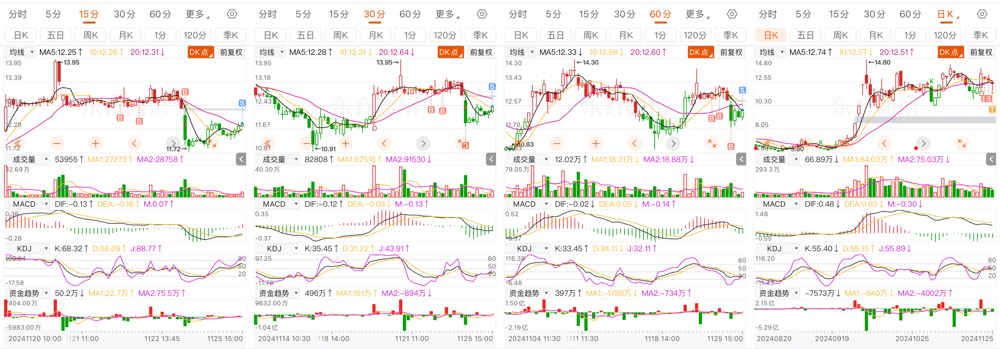
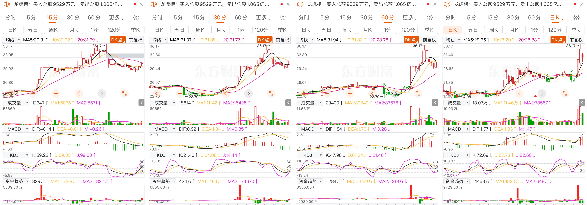
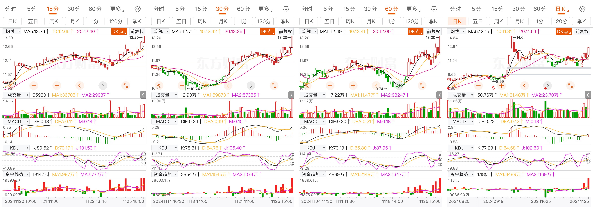

中海达昨日判断买点有误，近期看空，对应的策略应该是早盘抛出，而不是低开买入。现在10点13分，在等5分钟K线走好，目前5分钟金叉，15/30 在走修复曲线。但愿能够平安出局吧。
今天，分析中海达，凯淳科技，今天国际

当天复盘中来看，买点其实存在很大的问题的，在现有判断（次日要下跌）的前提下，忽视了降低仓位的操作，浮出的第一个念头还是加仓做正T，这种习惯，需要纠正的
当天走势来看，15分钟K线在早盘开盘就进入了放量回调阶段，kdj和MACD，在15分钟，30分钟，60分钟进入死叉共振，第二个5分K线，打出日内最低点，全天在走修复。尾盘15分/30分指标看多，kdj金叉，明日会有30分级别的反弹，60分钟级别反弹先不看，毕竟日线指标看空。除非明日30分钟级别能够涨停，预期5个点。
盘中做T节奏明确，但是买点来说，略微有点急躁。导致今日T不是特别成功。

日线：5日线上，日线看多趋势
60分钟：macd看空指标，KDJ在走修复，
30分钟：MACD和KDJ在走修复，由空转多
15分钟，KDJ金叉出现，15分级看多信号出现，但是由于尾盘MACD金叉还未出现，买点30.25，买入的话， 明日开盘还需观察，平开或者微低开，股价在31.5需要卖出止盈

日线：5日线上，且MACD金叉，日线看多趋势
60分钟：macd红柱在放大，指标优先于KDJ，看多
30分钟：11：30MACD 金叉，kdj金叉，指标看多
在上级指标均看多的情况下，应该往次级指标寻求看空拐点，下转查询，5分钟级别14:00出现买点，12.42。